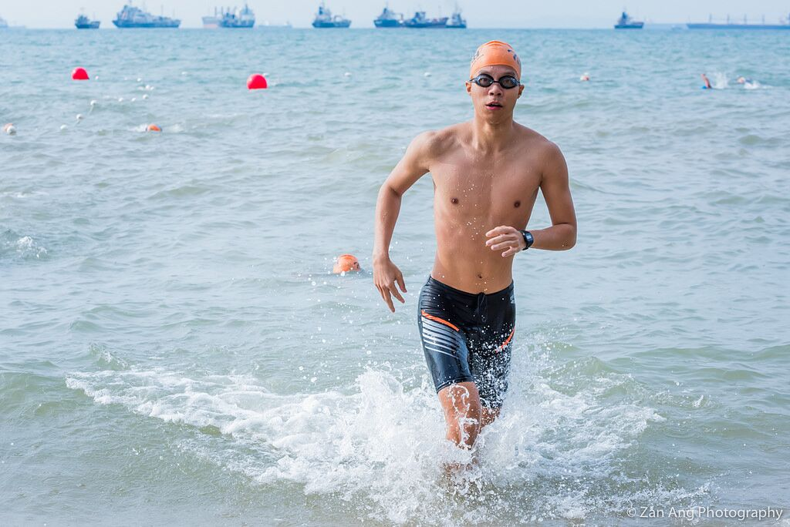

I love all kinds of sports, and instead of "mastering" a particular sport I prefer to be a jack of all trades and dabble in whichever that interests me.
Some of my favourites so far are definitely (in no particular order) basketball, rugby, and triathlon (encompassing swimming, cycling and running).
Took a pretty long hiatus from sports over the past year, but I'm slowly getting back into it again, starting with running!

my first triathlon
Reading
I'd been a huge reader back when I was younger (primary school days and earlier), but basically stopped reading entirely while I was in secondary school and JC.
Things took a turn once I enlisted, where I found the time spent reading in my bunk during breaks to be a wonderful respite from the army life.
Am happy to say that I've been reading quite a bit ever since, and I'm trying my best to read a book each week at the moment.
Some of my absolute favourites are Factfulness by Hans Rosling, The Upstarts by Brad Stone, and Sapiens and Homo Deus by Yuval Noah Harari.
Bill Gates recommending Factfulness
Others
Other hobbies include watching tons of random youtube videos and Netflix (trying my best to cut down though).
Favourite tv shows/movies - Naruto, Interstellar, Rick and Morty, Silicon Valley, The Good Wife and The Martian.